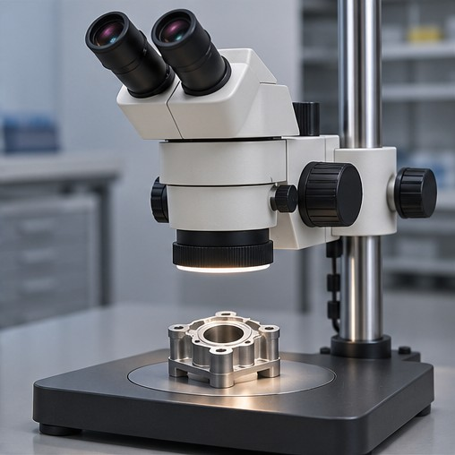
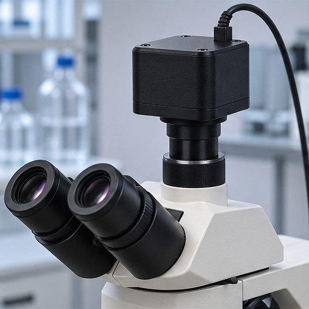
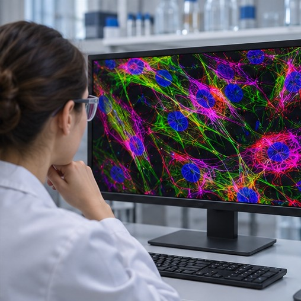

Browse by category.
Clinical compound microscopes
Compare upright systems for routine slide review and shared laboratory benches.
View products
Research compound microscopes
Compare upright and inverted platforms for different specimens and imaging methods.
View products
Industrial compound microscopes
Explore reflected-light systems for materials inspection and quality control.
View productsEducational microscopes
Find a microscope suited to classroom instruction, demonstrations, and student workstations.
View productsStereomicroscopes
Examine the surface and shape of larger specimens with room to work beneath the objective.
View products
Microscope cameras
Match image capture to your optics, illumination, and acquisition software.
View products
Imaging software
Explore acquisition, processing, and analysis software for your imaging workstation.
View productsACCU-SCOPE
Browse compound, inverted, and stereo microscope families from ACCU-SCOPE.
View products
Slide scanners
Digitize glass slides for whole-slide viewing and remote collaboration.
View productsImmunohistochemistry (IHC)
Explore staining instrumentation and compatible supplies for the histology bench.
View productsNeed help with compatibility?
Share your current instrument and the work you need it to do.